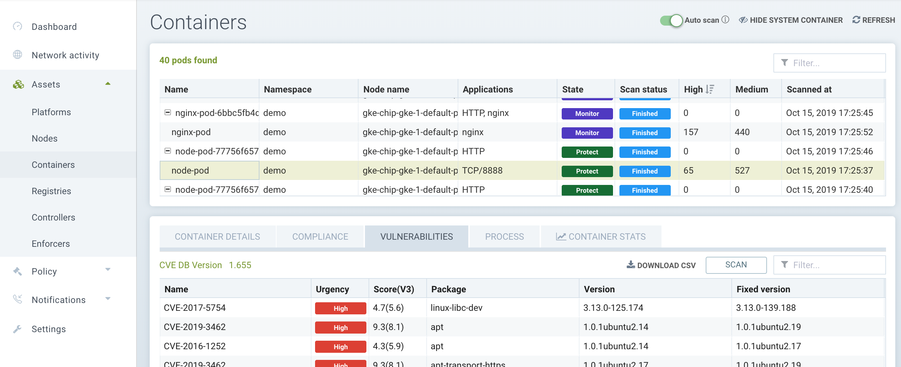

Analyse et conformité
SUSE® Security permet une analyse et une conformité tout au long du cycle de vie grâce à l’analyse des vulnérabilités et à l’exécution des benchmarks CIS pour la sécurité, ainsi qu’à des vérifications de conformité personnalisées. Le menu Risques de sécurité permet une gestion personnalisable de l’investigation, du tri et du reporting des vulnérabilités et de la conformité. Recherchez facilement les vulnérabilités des images et découvrez quels nœuds ou conteneurs contiennent ces vulnérabilités. Le filtrage avancé facilite la révision des résultats des analyses et des vérifications de conformité et fournit des rapports personnalisés. Il fournit également des rapports et des modèles de conformité standard et personnalisables pour le PCI, le RGPD et d’autres réglementations.
Aperçu de SUSE® Security l’analyse
L’analyse est effectuée à toutes les phases du pipeline, de la construction au registre en passant par l’exécution, sur divers actifs, comme indiqué ci-dessous.
| Type d’analyse | Image | Noeud | Conteneur | Orchestrator |
|---|---|---|---|---|
Vulnérabilités |
Oui |
Oui |
Oui |
Oui |
CIS Benchmarks |
Oui |
Oui |
Oui |
Oui |
Conformité personnalisée |
Non |
Oui |
Oui |
Non |
Sécrets |
Oui |
Oui |
Oui |
Non |
Modules |
Oui |
S/O |
S/O |
S/O |
Les images sont analysées soit lors de l’analyse du registre, soit via des plug-ins de phase de construction tels que Jenkins, CircleCI, Gitlab, etc.
Les CIS Benchmarks pris en charge par SUSE® Security incluent :
-
Kubernetes
-
Docker
-
Les benchmarks en version brouillon 'Inspirés par CIS' de Red Hat OpenShift
-
Google GKE
L’implémentation Open Source de ces benchmarks peut être trouvée sur SUSE® Securityla page Github
|
Les secrets peuvent également être détectés sur les nœuds et dans les conteneurs avec Scripts personnalisés. |
Analyse des fichiers de déploiement de ressources Kubernetes
SUSE® Security est capable d’analyser les fichiers yaml de déploiement pour des évaluations de configuration par rapport aux règles de contrôle d’admission. Ceci est utile pour analyser les fichiers yaml de déploiement tôt dans le pipeline afin de déterminer si le déploiement violerait des règles avant d’essayer le déploiement. Veuillez consulter Évaluation de la configuration sous les contrôles d’admission pour plus de détails.
Gestion des vulnérabilités et de la conformité
SUSE® Security fournit plusieurs moyens de revoir les résultats des analyses de vulnérabilités et de conformité et de générer des rapports. Elles comprennent les éléments suivants :
-
Tableau de bord. Examinez les vulnérabilités résumées et voyez comment elles impactent le Score de risque de sécurité global.
-
Menu des risques de sécurité. Visualisez l’impact des vulnérabilités et des problèmes de conformité et générez des rapports avec un filtrage avancé.
-
Menu des actifs. Consultez les résultats de vulnérabilité et de conformité pour chaque actif tel que les registres, les nœuds et les conteneurs.
-
Notifications → Rapports de risque. Visualisez les événements d’analyse pour chaque actif.
-
Règles de réponse. Créez des réponses telles que des notifications par webhook ou des quarantaines basées sur les résultats des analyses.
-
API REST. Déclenchez des analyses et récupérez les résultats des analyses par programmation pour automatiser le processus.
-
Alertes SYSLOG/Webhook. Envoyez les résultats des analyses à un SIEM ou à d’autres plateformes d’entreprise.
Menu des risques de sécurité
Ces menus combinent les résultats des analyses de vulnérabilités et des vérifications de conformité provenant du registre (image), du nœud et des conteneurs trouvés dans le menu Actifs pour permettre une gestion et un rapport des vulnérabilités de bout en bout. Le menu Profil de conformité permet de personnaliser les vérifications de conformité PCI, RGPD et autres pour générer des rapports de conformité.

Voir la section suivante sur Gestion des vulnérabilités pour savoir comment gérer les vulnérabilités dans ce menu, et la section Conformité et benchmarks CIS pour le reporting sur les benchmarks CIS et la conformité industrielle telles que PCI, GDPR, HIPAA, NIST, PCIv4 et DISA STIG.
Menu Actifs
Le menu Actifs rapporte les résultats des vulnérabilités et des vérifications de conformité organisés par actif.
-
Plateformes. La plateforme d’orchestration telle que Kubernetes, et les analyses de vulnérabilités de la plateforme.
-
Noeud. Nœuds/hôtes protégés par SUSE® Security Enforcers, et résultats des vérifications de conformité telles que les benchmarks CIS et les vérifications personnalisées, ainsi que les analyses de vulnérabilités des hôtes.
-
Conteneurs. Tous les conteneurs dans le cluster, y compris les conteneurs système, et les résultats des vérifications de conformité telles que les benchmarks CIS et les vérifications personnalisées, ainsi que les analyses de vulnérabilités en temps d’exécution des conteneurs. L’activité des processus et les statistiques de performance peuvent également être trouvées ici.
-
Registres. Registres/référentiels scannés par SUSE® Security. Les résultats des analyses d’images en couches se trouvent ici, et les résultats des analyses peuvent être utilisés dans les règles de contrôle d’admission (trouvées dans la stratégie → Contrôles d’admission).
|
Vérifications de conformité personnalisées comme mentionné ci-dessus sont définies dans le menu Stratégie → Groupes |
Analyse automatisée en temps d’exécution
SUSE® Security peut analyser les conteneurs en cours d’exécution, les nœuds hôtes et la plateforme d’orchestration pour détecter les vulnérabilités. Dans le menu Actifs pour les Nœuds ou Conteneurs, activez l’Auto-Scan en cliquant sur l’onglet Vulnérabilités pour un nœud ou un conteneur, puis Auto-Scan (apparaît en haut à droite) pour analyser tous les conteneurs, nœuds et plateformes en cours d’exécution, y compris ceux nouvellement démarrés une fois qu’ils commencent à fonctionner. Vous pouvez également sélectionner un conteneur ou un nœud et l’analyser manuellement.
Vous pouvez cliquer sur chaque nom de vulnérabilité/CVE découvert pour en obtenir une description, et cliquer sur la flèche d’inspection dans la fenêtre contextuelle pour voir la description détaillée de la vulnérabilité.

L’auto-scan sera également déclenché chaque fois qu’il y a une mise à jour de la base de données SUSE® Security CVE. Veuillez consulter la section Mise à jour de la base de données CVE pour plus de détails.
Actions automatisées, atténuation et réponses basées sur les vulnérabilités
Des règles de contrôle d’admission peuvent être créées pour empêcher le déploiement d’images vulnérables en fonction des résultats de l’analyse du registre. Voir la section Stratégie de sécurité → Contrôle d’admission pour plus de détails.
Veuillez consulter la section Stratégie de sécurité → Règles de réponse pour des instructions sur la création de réponses automatisées aux vulnérabilités détectées lors de l’analyse du registre, de l’analyse en temps réel ou des benchmarks CIS. Les réponses peuvent inclure la mise en quarantaine, la notification par webhook et la suppression.
Registres fédérés pour les résultats d’analyse d’images distribuées
Le cluster principal (maître) peut analyser un registre/dépôt désigné comme registre fédéré. Les résultats d’analyse de ces registres seront synchronisés avec tous les clusters gérés (distants). Cela permet d’afficher les résultats d’analyse dans la console du cluster géré ainsi que d’utiliser les résultats dans les règles de contrôle d’admission du cluster géré. Les registres n’ont besoin d’être analysés qu’une seule fois au lieu de par chaque cluster, réduisant ainsi l’utilisation de l’UC/mémoire et de la bande passante réseau. Voir la section multi-cluster pour plus de détails.
Mise à l’échelle automatique des pods de scanner
Les pods de scanner peuvent être configurés pour s’auto-scaler en fonction de certains critères. Cela garantira que les tâches d’analyse sont traitées rapidement et efficacement, surtout s’il y a des milliers d’images à analyser ou à ré-analyser. Il existe trois paramètres possibles : retardé, immédiat et désactivé. Lorsque des images sont mises en file d’attente pour analyse par le contrôleur, il maintient un 'compte de tâches' de la taille de la file. Veuillez consulter la section multiple scanners pour plus de détails.
|
L’auto-scaling des scanners n’est pas pris en charge lorsque le scanner est déployé avec un opérateur OpenShift, car l’opérateur modifiera toujours le nombre de pods à sa valeur configurée. |